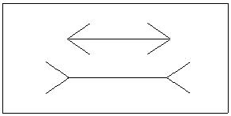
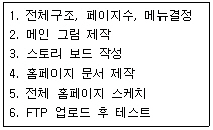
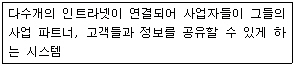
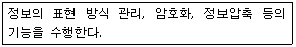
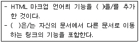
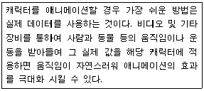

웹디자인기능사 (2004-03-03 기출문제)
1과목: 디자인 일반
1. 물건 구매시 매장의 조명등에 의해 색상 판별이 어려워 색상이 달라져 보이는 것은 무엇 때문인가?
- 연색성
- 조건등색
- 표면색
- 메타메리즘
(정답률: 51%)

2. 의도적으로 불규칙한 질서나 변칙적인 변화를 주는것을 강조라고 한다. 다음중 이러한 효과가 가장 잘 나타나는 것은?
- 직물의 무늬
- 홈페이지의 배너광고
- 파트테논 신전
- 88 서울 올림픽 3태극 마크
(정답률: 65%)
3. 한국의 전통적인 색상인 오방정색이 아닌 것은?
- 파랑
- 빨강
- 흰색
- 보라
(정답률: 85%)
4. 다음 중 실내 공간을 목적별로 분류한 대상이 아닌 것은?
- 생활 공간(living space)
- 가구 공간(furnuture space)
- 공공 공간(public space)
- 작업 공간(work space)
(정답률: 73%)
5. 유채색에 대한 설명이 아닌 것은?
- 순수한 무채색을 제외한 모든 색을 말한다.
- 색상(Hue)값을 조금이라도 포함하고 있는 색을 말한다.
- 색상, 명도, 채도를 모두 가지고 있다.
- 흰색에서 검정색까지의 그레이스케일로 표현되는 모든 색을 말한다.
(정답률: 82%)
6. 다음 중 색료의 3원색은?
- 자주(magenta), 노랑(yellow), 청록(cyan)
- 빨강(red), 파랑(blue), 노랑(yellow)
- 청록(cyan), 녹색(green), 파랑(blue)
- 파랑(blue), 빨강(red), 녹색(green)
(정답률: 64%)
7. 신인상파 화가의 쇠라(Georges Seurat)의 '점묘화'는 무슨 혼합의 예인가?
- 회전혼합
- 가산혼합
- 색료혼합
- 병치혼합
(정답률: 73%)
8. 다음 중 색의 주목성에 대한 설명으로 틀린 것은?
- 색의 진출, 후퇴, 팽창, 수축과 관련된 현상으로 사람들의 시선을 끄는 힘을 말한다.
- 거리의 표지판, 도로 구획선, 심볼마크 등 짧은 시간에 눈에 띄어야 하는 경우에 사용된다.
- 명시도가 높으면 상대적으로 주목성이 낮다.
- 명도, 채도가 높은 색이 주목성이 높다.
(정답률: 88%)
9. 아래의 그림에 나타나는 착시 현상으로 맞는 것은?

- 방향의 착시
- 대비의 착시
- 분할의 착시
- 길이의 착시
(정답률: 87%)
10. 다음중 디자인의 모든 분야에서 사용 가능한 상징적인 요소는 어느 것인가?
- 일러스트레이션
- 심볼 마크
- 포장디자인
- 광고디자인
(정답률: 75%)
11. 다음중 디자인 용어 해설이 잘못된 것은?
- 방향(Direction) : 한정된 공간 안에서 형태들의 위치나 정렬에 의해 나타나는 시작적 동세
- 율동(Rhythm) : 한개나 또는 그 이상의 요소가 서로 상반되게 배치됨으로써 나타나는 상황
- 반복(Repetition) : 시각적 형식 안에서 하나 또는 그 이상의 요소가 계속적으로 되풀이 되는 것
- 비대칭(Asymmetry) : 상대적으로 양쪽이 서로 같지 않은 상태나 정렬
(정답률: 83%)
12. 건물내 비상구 표시나 계단의 비상 표시등으 어두운 곳에서도 볼 수 있게 초록으로 하는 것은 무슨 현상을 응용한 것인가?
- 푸르킨예 현상
- 명도대비 현상
- 동화효과 현상
- 확대 현상
(정답률: 75%)
13. CIP(Corporate Identity Program)의 분류 중에서 기본 요소에 해당되는 것은?
- 전용 색상
- 사인
- 포장
- 서식
(정답률: 65%)
14. 다음 중 '군화의 법칙'이 아닌 것은?
- 근접의 법칙
- 주관적 태도의 법칙
- 유사의 법칙
- 폐쇄의 법직
(정답률: 75%)
15. 색의 속성에 대한 설명으로 틀린 것은?
- 채도는 색의 선명도, 즉 색의 맑고 탁한 정도를 나타내며, 유채색끼리 많이 혼합할수록 채도가 높아진다.
- 명도는 색의 밝고 어두운 정도를 나타낸다. 흰색에 가까울수록 고명도, 검정에 가까울수록 저명도 이다.
- 색상은 명도나 채도에 관계없이 색채를 구별하는데 필요한 색의 명칭이다.
- 무채색은 흰색, 검정색, 회색계열로 색상과 채도가 없고 명도의 차이만 있다
(정답률: 48%)
16. 문자의 크기를 결정하는 것은?
- 높이
- 길이
- 넓이
- 각도
(정답률: 68%)
17. 자연에서 찾아 볼 수 있는 디자인의 원리에 대한 설명으로 알맞은 예가 아닌 것은?(오류 신고가 접수된 문제입니다. 반드시 정답과 해설을 확인하시기 바랍니다.)
- 고대 그리스 밀로의 비너스, 파르테논 신전 등은 비례의 좋은 예이다.
- 나뭇잎, 숲 속의 나무, 해변의 모래알, 바다의 파도 등은 대칭의 좋은 예이다.
- 잔잔한 수명 위에 돌을 떨어뜨려 생기는 동심원은 방사구성의 좋은 예이다.
- 무성한 나뭇잎들 사이에서 핀 꽃, 밤하늘에 뜬 달 등은 강조의 좋은 예이다.
(정답률: 69%)
18. 다음 중 선에 대한 설명으로 거리가 먼 것은?
- 선은 하나의 점이 이동하면서 이루는 자취이다.
- 가는 직선은 예리하고 가볍게 느껴진다.
- 사선은 동적이고 불안정한 느낌을 주나 사용에 따라 강한 표현에 효과적이다.
- 곡선은 우아, 매력, 모호, 유연 섬세함과 정적인 표정을 나타낸다.
(정답률: 60%)
19. 인간을 중심으로 한 디자인 작업시 고려해야 할 기능성과 거리가 먼 것은?
- 물리적 기능
- 생리적 기능
- 심리적 기능
- 시장적 기능
(정답률: 65%)
20. 디자인이 갖추어야 할 조건 중 가장 중요한 것은?
- 장식적인 요소를 만들어 주는 작업
- 실용적인 기능과 조형적인 아름다움을 추구하는 작업
- 상징적인 형태로 단순화 시키는 작업
- 타제품과 차별화 시키는 작업
(정답률: 88%)
2과목: 인터넷 일반
21. HTML 문서의 기본 구조로 알맞은 것은?
- <HTML> <HEAD> </HEAD> <BODY> </BODY> </HTML>
- <HEAD> </HEAD> <HTML> <BODY> </HTML> </BODY>
- <HEAD> <HTML> </HTML> </HEAD> <BODY> </BODY>
- <HEAD> <HEAD> <HTML> <BODY> </BODY> </HTML>
(정답률: 88%)
22. TCP/IP에 대한 설명으로 잘못된 것은?
- TCP는 OSI의 전송 계층에 해당 한다
- E-mail 이용시 TCP/IP가 필요 하다.
- IP는 왜곡된 packet을 재전송하도록 요구할 수 있다.
- 인터넷에서 모든 시스템들이 TCP/IP 프로토콜을 이용한다.
(정답률: 51%)
23. IPv4 주소에서 각 클래스별 첫 8bit의 값이 옳은 것은?
- A:0000 0000 ~ 0111 1110 B:1000 00001 ~ 1011 1111
- A:0000 0000 ~ 0111 1111 B:1000 00000 ~ 1011 1111
- A:0000 0001 ~ 0111 1110 B:1000 00000 ~ 1011 1111
- A:0000 0001 ~ 0111 1111 B:1000 00001 ~ 1011 1111
(정답률: 65%)
24. 다음 웹 페이지 제작과정을 바르게 나열한 것은?

- 5-1-3-2-4-6
- 5-3-1-2-4-6
- 3-1-5-2-4-6
- 3-5-1-2-4-6
(정답률: 60%)
25. 고속통신망으로서 전화 교환기를 거치지 않고 ATM 초고속망에 연결하여 고속의 서비스를 제공하는 방식의 인터넷 서비스는?
- ISDN
- Backbone
- ADSL
- WAN
(정답률: 65%)
26. 다음 설명에 해당되는 용어는?

- Extranet
- Outsourcing
- Datagram
- Datalink
(정답률: 56%)
27. 최상위 도메인 gov와 동일한 성격을 갖는 서브 도메인의 이름은?
- ac
- go
- or
- re
(정답률: 78%)
28. OSI 7-layer에서 다음 설명과 관련 있는 계층은?

- 전송계층
- 표현계층
- 세션계층
- 응용계층
(정답률: 66%)
29. 검색엔진(Search Engine)에서 검색연산자를 지정할때 지정한 2개의 검색어 중 어느 하나라도 포함하고 있는 자료를 모두 찾는 기능을 가진 연산자는?
- AND
- OR
- NOT
- NEAR
(정답률: 77%)
30. 웹 페이지 탐색구조 중 야후와 같은 디렉토리형 검색엔진 처럼 상위 메뉴와 각각의 상위 메뉴를 세분화한 하위메뉴로 구성하는 방식의 구조는?
- 계층구조
- 선형구조
- 망구조
- 하이퍼링크 구조
(정답률: 82%)
31. HTML의 태그에서 종료 태그가 없는 것은?
- <BODY>
- <HR>
- <CITY>
- <CODE>
(정답률: 72%)
32. 웹 브라우저의 기능이 아닌 것은?
- 웹페이지의 저장 및 인쇄
- 최근 방문한 URL의 목록 제공
- 소스 파일 보기
- 멀티미디어를 이용한 홈페이지 제작
(정답률: 79%)
33. 국내 인터넷 주소를 관리하는 기관은?
- 한국인터넷정보센터(KRNIC)
- 한국소프트웨어진흥원(KIPA)
- 한국전산원(NCA)
- 한국정보보호진흥원(KISA)
(정답률: 70%)
34. 웹문서 작성을 위한 국제 표준언어가 아닌것은?
- MS-WORD
- SGML
- HTML
- XML
(정답률: 71%)
35. abc 대학교의 웹 페이지 주소로 옳은 것은?
- http://www.abc.ac.kr
- http://www.abc.re.kr
- http://www.abc.go.kr
- http://www.abc.co.kr
(정답률: 78%)
36. 인터넷 광고의 특징이 아닌것은?
- 광고에 대한 효과를 실시간으로 확인 가능하다.
- 초기 광고 제작 단가가 타 매체에 비해 저렴하다.
- 디지털 매체이므로 광고 내용의 수정은 쉽지 않다.
- 기존 매체에 비해 더욱 명확한 타겟(Target) 마케팅이 이루어 진다.
(정답률: 79%)
37. 정기적이고 자발적으로 인터넷을 여행하며 정보를 수집하고 수집한 정보를 검색엔진의 데이터베이스에 저장하는 프로그램을 의미하는 것이 아닌 것은?
- bug
- crawler
- robot
- worm
(정답률: 62%)
38. 홈페이지 제작에 사용하는 16진수 칼라 표기명 중 틀린 것은?
- Black = #000000
- Green = #00ff00
- Yellow = #ff00ff
- White = #ffffff
(정답률: 66%)
39. 웹 브라우저가 아닌 것은?
- 핫 자바(hot java)
- 익스프레스(express)
- 오페라(opera)
- 모자익(mosaic)
(정답률: 51%)
40. 자바 스크립트 변수명에 사용할 수 없는 것은?
- menu_7
- total
- 2cond_name
- _reg_number
(정답률: 60%)
3과목: 웹그래픽스 디자인
41. HSB 컬러시스템에 대한 설명중 맞는 것은?
- 채도의 흰색의 비율(%)로 표현되며 0%인 색을 무채색, 100%인 색을 순색이라 한다.
- 채도의 회색의 비율(%)로 표현되며 100%인 색을 무채색, 0%인 색을 순색이라 한다.
- 명도는 회색의 비율(%)로 표현되며 검정색(0%)에서 흰색(100%)까지 표현된다.
- 명도는 검정색의 비율(%)로 표현되며 검정색(0%)에서 흰색(100%)까지 표현된다.
(정답률: 48%)
42. 웹에서 사용되지 않는 그래픽 이미지 파일은?
- jpeg
- gif
- tif
- png
(정답률: 79%)
43. 색상모드 중 256색상 내에 이미지를 표현하는 것으로 용량이 적기 때문에 웹에서 가장 많이 쓰이는 색상체계는?
- RGB
- CYMK
- INDEX
- GRAYSCALE
(정답률: 66%)
44. 플래시(Flash) 애니메이션을 최적화 하기 위한 방법중 적절하지 않은 것은?
- 두번 이상 사용되는 오브젝트는 심벌로 저장한 후 사용하는 것이 좋다?
- 외부에서 불러들인 벡터 이미지는 Modify/Optimize를 이용, 곡선을 최적화 할 수 있다.
- 모션트위닝은 쉐이프트위닝에 비해 많은 데이터를 필요로 하기 때문에 사용을 지양한다.
- 사운드 압축시 웨이브(WAV)파일 보다는 MP3 파일을 사용하는 것이 좋다.
(정답률: 54%)
45. 다음중 ( )안의 내용으로 옳은 것은?

- 메타 태그(Meta tag)
- 하이퍼 텍스트(Hypertext)
- 이미지(Image)
- W3C
(정답률: 84%)
46. 웹사이트에 올릴 이미지의 크기가 클 경우 크기를 조정하기 위한 가장 올바른 방법은?
- 웹에서 소스 수정으로 사이즈를 조정한다.
- 드림위버에서 이미지 크기를 줄인다.
- 포토샵의 이미지 사이즈에서 픽셀수를 줄인다.
- 나모에서 웹용으로 저장할때 Quality를 낮춘다.
(정답률: 72%)
47. 페이지 수가 많고, 담고 있는 정보가 복잡한 홈페이지 일수록 그 구성과 형태를 얼마나 잘 체계화하고, 적절한 장소에 위치 시키느냐에 따라 쉬운 정보검색을 할 수 있다. 이를 가능케 하는 디자인 작업은?
- 스토리보드
- 시나리오
- 네비게이션 디자인
- 스토리텔링
(정답률: 65%)
48. 컴퓨터그래픽스의 역사에 대한 설명으로 잘못된 것은?
- 컴퓨터그래픽스의 발달사는 출력 장치의 기술적 분야의 발전 상태를 포착하고 분류하는 방법이 있다.
- 1960년대는 리플레시형 CRT 시대
- 1970년대는 스트레지형 CRT 시대
- 1980년대는 TFT LCD 시대
(정답률: 54%)
49. 저해상도 이미지에서 많이 나타나며 형태의 가장자리에 나타나는 계단 현상을 무엇이라고 하는가?
- 안티엘리어싱
- 디더링
- 엘리어싱
- 해상도
(정답률: 69%)
50. 컴퓨터 그래픽스의 특징이 아닌것은?
- 색채, 질감, 명도 등의 정확한 표현으로 실물 재현이 가능하다.
- 사람이 제작한 모든 그림 및 영상을 뜻한다.
- 실존하지 않는 공간, 화상을 시각화하여 표현할 수 있다.
- 이미지나 형태 등의 시각적인 요소를 디지털화 시킨것이다.
(정답률: 63%)
51. 사운드 파일 포맷에 관한 내용 중 틀린 것은?
- RA는 RealAudio 압축 방식을 사용한 웨이브 파일 포맷이다.
- MPEG는 레이어3 방식을 사용하는 경우 mp3라는 확장자로 표현된다.
- WMA는 윈도우 미디어 플레이어의 표준 포맷이다.
- WAV는 PC 환경에서는 사용되지 않는 형식이다.
(정답률: 75%)
52. 벡터 방식의 드로잉 프로그램이 아닌 것은?
- 일러스트레이터
- 코렐드로우
- 프리핸드
- 페인터
(정답률: 60%)
53. 가독성이 많은 양의 텍스트를 접할때 읽기 쉬운 정도를 말하는데, 인쇄물과 영상물에 각각 적용되는 가장 효율적인 글자체 설정은?
- 세리프체, 산세리프체
- 굴림체, 고딕체
- 바탕체, 명조체
- 궁서체, 돋움체
(정답률: 52%)
54. 컴퓨터 그래픽 이미지를 표현하는데 있어, 정사각형의 픽셀들이 모여서 이미지를 구성하는 방식은?
- 비트맵
- 포스트스크립
- 일러스트레이터
- 벡터라이징
(정답률: 81%)
55. 화면을 표현하기 위한 최소 단위이면서 화소라고도 불리는 것은 무엇인가?
- 비트맵
- 벡터
- 해상도
- 픽셀
(정답률: 84%)
56. 인터넷 익스플로러를 이용하여 동영상을 보여주고자 할 경우 사용 할 수 없는 형식은?
- aif
- wmv
- avi
- mov
(정답률: 63%)
57. 컴퓨터 그래픽스 시스템중 운영체제(Operating system)에 대한 설명으로 옳은 것은?
- 하드웨어와 애플리케이션 사이에 위치하여 전체적인 시스템 자원을 관리한다.
- 컴퓨터를 구성하는 모든 장치들이 원하는 대로 작동되도록 하는 장치이다.
- 미디어처리장치와 입출력장치, 그리고 정보를 저장하는 저장장치로 구별 할 수 있다.
- 컴퓨터가 인식하고 데이터를 처리할 수 있도록 외부정보를 이진부호로 바꿔 준다.
(정답률: 52%)
58. 제안서에 들어가는 내용으로 부적절한 것은?
- 프로젝트의 개요 및 목적
- 차별화 전략 및 제작일정
- 팀구성 및 예산
- 구조설계 및 네비게이션 디자인
(정답률: 61%)
59. 다음이 설명하고 있는 애니메이션 제작과정은?

- 모델링
- 레코딩
- 렌더링
- 모션캡쳐
(정답률: 70%)
60. 사이트 내용의 구조와 서로간의 유기적인 관계를 한눈에 식별할 수 있도록 도표 형태로 나타내 주는 것을 무엇이라 하는가?
- 스토리보드
- 플로우 차트
- 스토리텔링
- 프로토타입
(정답률: 54%)